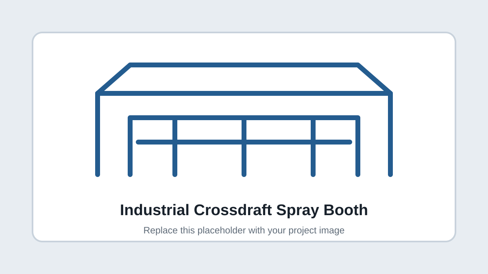

INDUSTRIAL DESIGN
Crossdraft Spray Booth
Designed most of a large industrial spray booth using SolidWorks sheet metal, weldments, large assemblies, PDM, drawings, and bills of materials.
SolidWorksSheet MetalWeldmentsDFM
View case study →